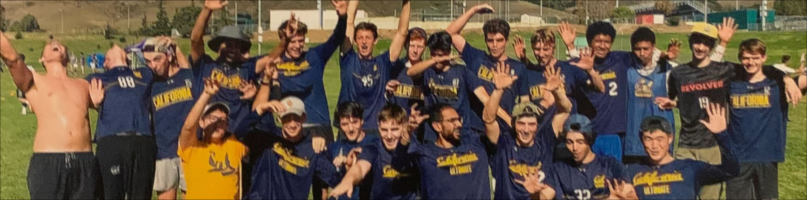

Ursa is Cal's premier Men's ultimate frisbee team, comprised of student athletes and coaches from around the country (and from other countries too), who all study a diverse set of topics. Each and every one of us bring to this team a unique level of competitiveness, camaraderie, and culture.
Each year, we travel and compete against other university's ultimate frisbee programs, all with the common goal of qualifying for the annual College Nationals and an opportunity to be recognized as one of the best teams in the nation. Our competitive season takes place between January to April, with playoffs happening throughout April and May, and the preseason in the fall semester.
Tryouts take place in the beginning of each fall semester, and from there on we work together - throwing, running, lifting, and practicing - to constantly improve. This is who we are, and this is who we always will be.
What is Ultimate Frisbee?
Ultimate frisbee is a sport gaining major traction on the local, national, and international level. It combines sprinting, endurance running, jumping, diving, special disc handling skills, and immersive strategies into an exciting non stop game built on the fundamentals of great sportsmanship. Playing on a grass or turf field, teams of 7 try to score a single disc into their respective endzones by only passing the flying disc through the air, without it touching the ground or being intercepted by the opposing team. Athletes on offense must strategically maneuver to get open and gain possession of the disc, while their defenders try to disrupt their flow through non-contact movements. One point is gained for each team which successfully scores in their goal endzone, and the team with more points at the end of the game wins!
This sport is unique among other sports because of its self-officiation, the tight knit communities established around the game, and the growing youth, college, professional, masters, and club scenes for people of all genders. The entry requirements for this sport are extremely minimal in terms of cost and material, and there are numerous resources available for those looking to enter the ultimate scene! Please contact us if you'd like more information!
History
Since Cal's ultimate team was founded back in 1989, we've been a strong competitor within our region. The team has finished at 11th, 5th, and 2nd at Nationals in the past, and looks to make another strong push this year! Alumni and current members of our program have been players on many notable teams around the nation, such as SF Revolver, SF Flamethrowers, SF Blackbird, and Seattle Sockeye.
Find Ursa on our social media!

This is not an official site for Ursa Major or UC Berkeley